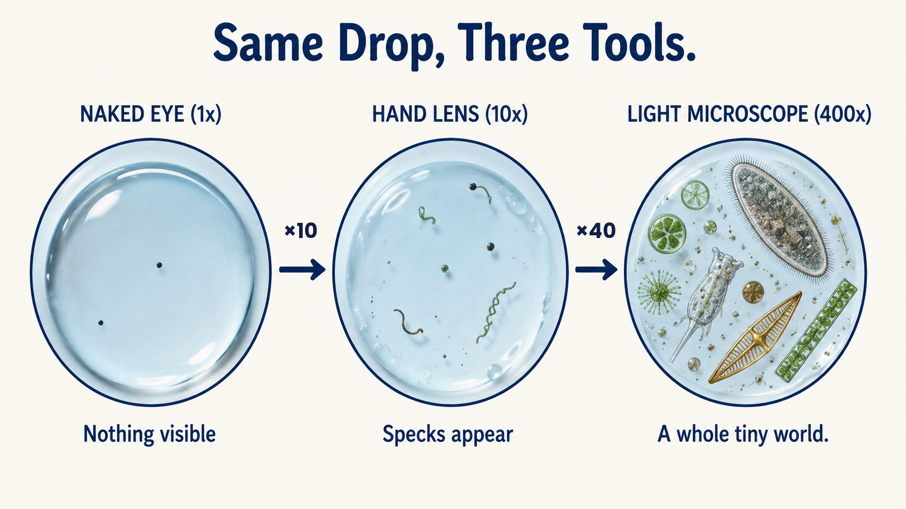

Keep this question in mind. By the end, you’ll know which tool to grab when something is too small for your eyes, and why.
Something strange is happening at Palmetto Beach. Listen to the alert. Then look closer with Sam’s zoom machine.
Your eyes are amazing — but they have limits. Today you'll meet the tools that scientists use to see what's too small for the naked eye, and what those tools can (and can't) do.
Tap a card to flip it and read what the word means.
Part 1 · Your Eyes Are Powerful, but Limited
Your eyes are some of the best tools you have. They pick up colors, movement, distance, and details. But they have limitationsLimitationSomething a tool can't do.. You can't see the bacteria in a drop of pond water. You can't see how a single grain of beach sand is shaped.
Scientists use tools that magnifyMagnifyMake something look bigger.. These tools make small things look bigger, so you can observeObserveLook carefully and record what you see. the detailDetailA small piece of information..
Part 2 · Three Tools for Three Levels of Tiny
Scientists pick tools based on how small the thing is. Most labs have all three of these:
- Hand lensHand lensA small magnifying glass. (about 2x–10x): Quick, portable, no batteries. Perfect for looking at leaves, insects, sand, rocks, or a fingerprint.
- Light microscopeMicroscopeA lens tool that magnifies tiny things. (about 40x–1,000x): Shows things too small for your eyes: plant cells, blood cells and the tiny moving life in a drop of pond water.
- Electron microscope (up to 1,000,000x): Uses a beam of electrons instead of light. It can show the bumps on a single virus. But the sample must be dried and specially coated first, so nothing on it can be alive. Most schools don't have one.
Each tool has limitations. A hand lens can't see bacteria. A light microscope can't see most viruses. Smart scientists pick the right tool for the question.
Watch out: Some people think a more powerful tool is always better. But a hand lens is the right tool for a leaf. A 1,000x microscope would show only a tiny, confusing piece of it. The best tool is the one that fits the question.

Part 3 · Pick the Right Tool
Sam’s lab got four requests this morning. Each one needs the right tool.
Part 4 · Count the Cells
Back to Sam’s sample. A light microscope can count living red tide cells. Florida scientists count them this way to warn people at the beach.
What does it mean to MAGNIFY something?
You want to look at a bee's wing. Which tool is the BEST choice?
What is a LIMITATION of a hand lens?
🌿 Part B — Short Answer
Answer in complete sentences. Use vocabulary words from today's lesson.
🔬 Part C — Three Views of One Small Thing
Pick one small Florida thing (a leaf, a shell, a grain of sand, an ant). Tell what you’d see with your eyes, with a hand lens and with a microscope. Then pick the best tool for one question about it.
A classmate says, "You should always use the most powerful tool you can find. The more magnification, the better."
Do you agree or disagree? Prove it with two pieces of evidence from today's lesson.
Nicely done. You found what was hiding in Palmetto’s water, and you picked the right tool for each job. Next time, you’ll flip the question: how do tools help us see things that are very far away, like the Moon, stars and planets?